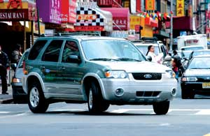
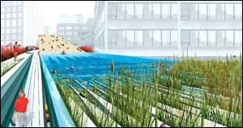
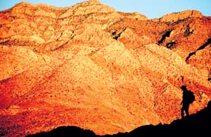
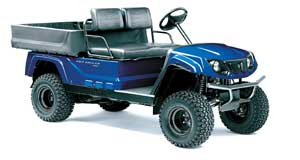

Issue #206 - October/November 2004
The scramble is on for drivers interested in Ford’s new Escape Hybrid, scheduled to hit the U.S. mass market this fall. The hybrid Escape is the first U.S.-made hybrid and the first hybrid sport utility vehicle. It follows in the wake of Toyota’s highly successful 2004 Prius sedan.
Ford spokesman Jon Harmon says the company plans to produce 20,000 of the vehicles at Ford’s Kansas City, Mo., plant in this introductory year. The first 4,000 are to be sold in only 14 states, including California, Michigan and New York, as well as Washington, D.C. The balance of the initial run is scheduled to go on sale in January 2005 across the rest of the United States and in Canada.
And interest is high, Harmon says. By mid-summer, 55,000 people had requested information on the vehicle through the company’s Web site (www.ford.com).
The front-wheel-drive Escape Hybrid is projected to get 35 to 40 miles per gallon in the city and 29 to 31 mpg on the highway, compared to the conventional Escape, which averages only 19 mpg in the city and 25 on the highway. A study by the Union of Concerned Scientists (UCS) shows the Escape Hybrid will save each of its owners more than $400 in fuel costs every year.
“The new Escape Hybrid is the greenest mass-market SUV ever to hit the streets,” says David Friedman, UCS’s clean vehicles research director. “The new Escape exemplifies the unique ability of hybrids to combine best-in-class fuel efficiency and emissions performance with the acceleration and utility customers have come to expect.”
The Escape Hybrid’s engine is a 2.3-liter inline four-cylinder, combined with a 65-kilowatt electric motor, designed to make the vehicle drive with power similar to that of a six-cylinder. Like other hybrids, the Escape has an Integrated Starter Generator that automatically shuts the gasoline engine off when it is not needed, such as when idling at a traffic light. Harmon says Ford swapped patents with Toyota for some parts of the SUV’s system, but the company did its own engineering. The Escape Hybrid produces 97 percent fewer emissions than federal standards permit and qualifies for Advanced Technology Partial Zero Emissions Vehicle (AT-PZEV) classification. Harmon adds that 85 percent of the vehicle’s parts are recyclable.
The rollout of the Escape Hybrid comes at a good time for Ford. This year, the company has received pressure from environmental groups to improve the overall average mileage ratings of its fleet, considered the worst in the industry.
“Ford has set a high bar when it comes to hybrid SUVs,” says Jason Mark, director of UCS’s clean vehicles program. “But to cut our dependence on oil, automakers need to sell millions of hybrids every year.”
How Fast is the World Running out of Crude Oil?
No one disagrees that the world is running out of oil. The question has been: When will it happen? Experts now agree that global oil production will begin declining soon. According to the June 2004 issue of National Geographic, Colin Campbell of the Association for the Study of Peak Oil estimates world production outside of the Middle East will peak in 2006; if Middle East oil is available, production will peak in 2016.
The U.S. Geological Survey (USGS) has a slightly more optimistic view because, unlike Campbell, it does not factor in political or environmental constraints on oil production. Using USGS supply data, world oil production outside of the Middle East is predicted to peak in 2023; if Middle East oil is factored in, the estimated peak is 2040.
Oil production in the continental United States peaked in 1970; today, U.S. suppliers make up the difference between domestic output and growing U.S. demand with imported oil.
In June, Campbell told the British Broadcasting Corporation that he thinks the more optimistic oil reserve estimates are highly questionable. “Many great oil fields are increasingly old and inefficient,” he says, “and I don’t think oil is easy to produce with a sniper behind every palm tree, either. The way to increase energy security is to reduce demand.”
NYC Park To Break New Ground
Models for big city parks of the future could come out of a New York City design competition aiming to convert a 1½-mile stretch of raised railroad track line, called the High Line, into a public park.
A group called Friends of the High Line organized the contest to give a facelift to the track, which runs between the meatpacking district and Hell’s Kitchen. It has been abandoned for more than two decades.
Established in 1999 as a neighborhood community project, the Friends group now boasts 6,000 members and has the New York City Council’s backing for up to $15 million in funding. A team led by Field Operations, a New York architecture firm specializing in urban ecology, won the contest, which drew 720 entries from 36 countries. The winning proposal combines the track’s existing landscape of wildflowers and gravel with public gardens, walking and hiking trails, a swimming pool and outdoor theater. Robert Hammond, Friends of the High Line co-founder, says the project “could really be a model for the parks of the future. People all over the world are interested in it. “There is a lot of infrastructure around the country when it comes to industrial sites, and those are going to be the sites to build parks. It’s not about razing what was there, but integrating it into the new public space.” To learn more about the New York project, go to www.thehighline.org.
Mother Says: Vote Smart!
Exercise your right to vote! Nov. 2 is Election Day, and if you’re interested in learning about a specific candidate’s voting record and views on important issues, one place to check is www.vote-smart.org. The Web site allows you to search by your Zip code, your home state or a candidate’s name.
Other Internet voter resources:
•Register to vote at www.workingforchange.com/vote
•Go to www.fec.gov/votregis/vr.htm to print copies of the National Voter Registration form, good in most states.
For an absentee ballot, contact your local county or city election officials. And remember what Winston Churchill said about democracy: “It’s the worst system for governance, except for every other system that has ever been tried.”
Group IDs 12 ‘At-risk’ Wild Areas
The Campaign for America’s Wilderness is celebrating the 40th anniversary of the Wilderness Act with a report highlighting lands still at risk across the nation.
The report, titled “Wild … for How Long? Twelve Treasures in Trouble,” profiles wilderness areas ripe for permanent protection in Alaska, Arizona, California, Nevada, New Mexico, Oregon, Pennsylvania, Utah, Vermont, Virginia, Washington and Wyoming.
“There are still tens of millions of acres of wilderness that could vanish if we do not act to protect them,” says Mike Matz, executive director of the Campaign. “This report highlights just some of our national gems that should be placed in the treasure chest.”
In each place profiled, local people are working to protect the land for future generations to enjoy. In many areas, legislation and proposals for preservation are pending. Currently, outside of Alaska, only 2.5 percent of the nation’s land is designated as wilderness by Congress, and thus under permanent protection.
The report notes that from the Western Arctic in Alaska to the rugged slopes and picturesque meadows of Virginia’s Crawfish Valley, oil and gas extraction, logging and road building threaten many of the nation’s wild places. Some of the biological values amidst these pristine areas are the low-elevation old-growth forests in Washington’s Wild Sky, the Sonoran desert and related upland ecosystems in Arizona’s Tumacacoris, and sage grouse habitat on the uplands above Idaho’s Owyhee Canyon Country.
“Public support for wilderness protection is broader and deeper than it has ever been,” Matz says. “Americans want their children to be able to hike, camp, fish, hunt and enjoy the nation’s wild lands just as we have over the past four decades.”
For the full report on the 12 areas, go to www.leaveitwild.org.
Sprouts & snippets
Internet Group Targets Media
The Consumer Federation of America’s new Web site, www.MediaOwnership.org, is geared to educate consumers on issues of media control. The federation launched the site shortly after a federal appeals court ordered the Federal Communications Commission to reconsider media consolidation rules, noting it failed to justify the easing of ownership limitations. The FCC’s rules would have allowed major media companies to own more TV and radio stations as well as several newspapers in one market. CFA officials say they hope the campaign will help keep the pressure on the FCC and the White House to adhere to the court’s ruling.
Saving Tons of Trees
What do Paul Hawken, Julia Butterfly Hill, Alice Walker, Barbara Kingsolver and Winona LaDuke have in common? They are among authors urging their publishers to increase the use of recycled paper in their books. More than 100 U.S. publishers, including Chelsea Green and Island Press, have joined The Green Press Initiative, pledging to use at least 30 percent non-chlorine bleached, post-consumer recycled paper in their publications. According to Environmental Defense, each ton of 100 percent post-consumer recycled paper that replaces virgin paper conserves 24 trees.
Side-by-Sides Gain in Popularity
If you need to travel over rough, off-road conditions and need room for a co-worker and cargo, check out the new ATVs on the market. John Deere popularized the rugged side-by-side utility vehicle with its Gator; now, Yamaha, Suzuki, Polaris, Kubota and others have introduced versions of their own. Prices range from $4,000 to $8,000.
Heritage Turkeys Excel in Study
Heritage turkeys, including Slates, Blacks and Bourbon Reds, have vigorous immune systems, making them optimum choices for organic, free-range production, according to a study conducted by the American Livestock Breeds Conservancy with Virginia Polytechnic Institute and Virginia Tech in Blacksburg, Va.
The research compared standard (heritage) varieties and an industrial strain for immune function and range production.
In comparison to the heritage birds, the industrial line showed faster weight gain and improved feed conversion but also greater mortalities from heat, disease and shipping stress.
For more information, go to www.albc-usa.org.
|
 Courtesy Ford Motor Company The Ford Escape Hybrid , first U.S.-made hybrid and first hybrid SUV, is to go on sale this fall in selected locations . |
 A New York design competition to convert a 1½-mile stretch of abandoned elevated railroad viaduct to a park drew< this winning design, submitted by Field Operations, a New York architecture firm specializing in urban ecology. |
 Southern Nevada’s "Big Wild” is one of 12 wilderness areas recommended for preservation by the Campaign for America’s Wilderness. |
|
 |
|
|